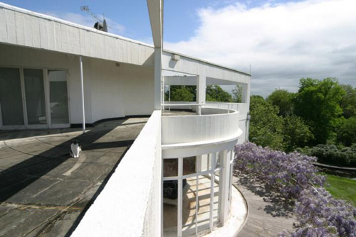
St Ann's Court, Chertsey in Surrey used as the 'Crow's Nest'. (Also seen in 'The Plymouth Express' and 'Mrs McGinty's Dead').
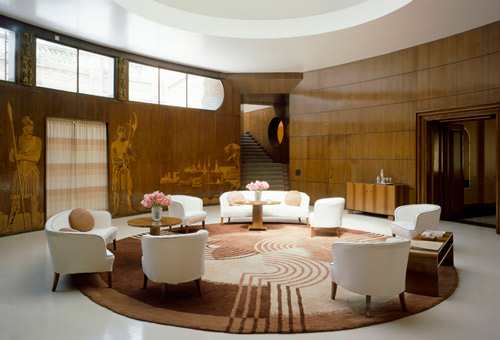
The Entrance Hall at Eltham Palace is used as the lounge of the 'Crow's Nest'. (Also used in 'Death on the Nile').
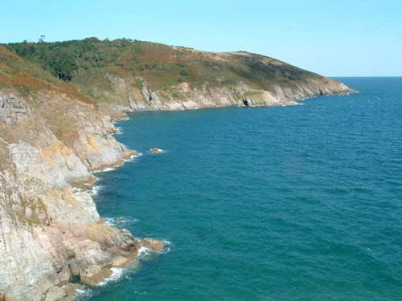
Pudcombe Cove near Coleton Fishacre, Dartmouth in Devon used as the sailing location near the 'Crow's Nest'.
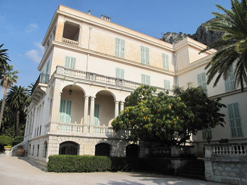
The Villa Maria Serena in Menton, France is used as the 'Hotel Majestic'. (Also seen in 'The Mystery of the Blue Train').
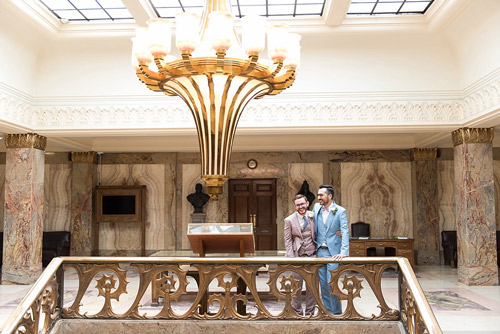
Wandsworth Town Hall, London SW18 used as the interior of the 'Hotel Majestic'.
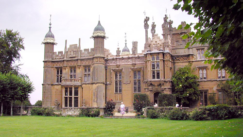
Knebworth House used as 'Melfort Abbey' - the home of Sir Bartholomew Strange.
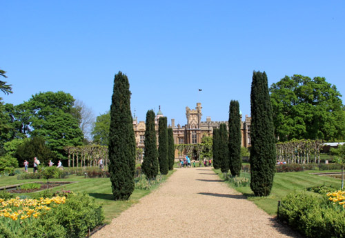
Tall yews in Knebworth House garden.
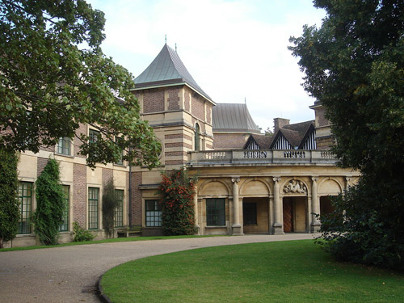
Entrance to Eltham Palace used as the Sanatorium.
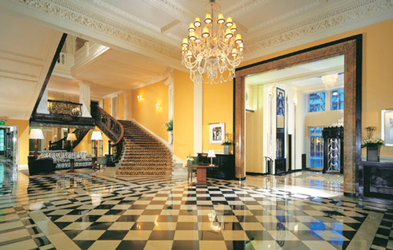
Claridges Hotel used as 'Ambrosines' where Cynthia Dacres' fashions are on sale.
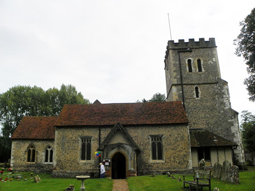
The Church of St John the Baptist, Little Marlow where Rev. Babbington is buried (and later exhumed).
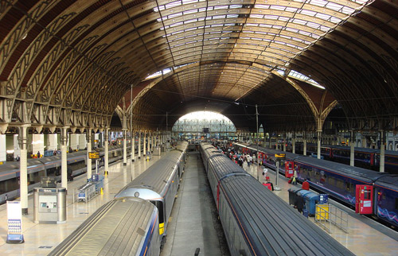
Paddington Station where the journeys to and from Cornwall terminate.
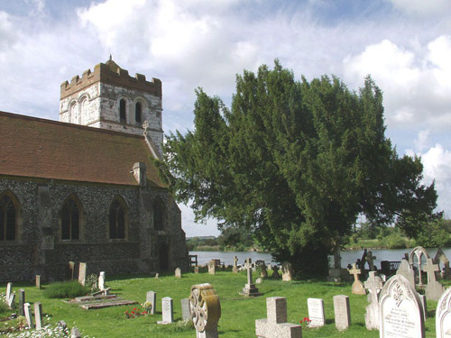
All Saints Church, Bisham, Berkshire where Sir Charles Cartwright proposes to Egg Lytton Gore.
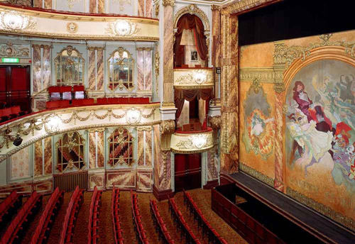
Novello Theatre, Aldwych where Poirot exposes the murderer.